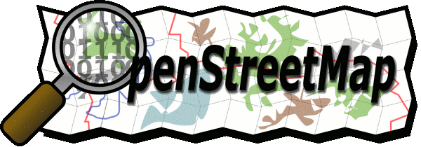

OpenStreetMap - Service
Auf dieser Seite finden sich ein paar Beispiele, wofür man die Daten von OpenStreetmap verwenden kann.
Karten für Garmin-Geräte
Diese Karten sind zwar nicht routingfähig, aber in Gegenden, die bereits gut erfasst sind, sehr brauchbar. Insbesondere Rad- und Fußwege sind oftmals sehr viel besser erfasst als in kommerziellen Karten.
POIs im GPX- und Garmin-Format
OpenStreetMap sammelt nicht nur Straßen. Die Projektmitglieder tragen auch Restaurants, Apotheken und Aussichtspunkte zusammen. Die hier angebotenen Sonderpunkte enthalten solche Daten im gpx- und gpi-Format und lassen sich auf verschiedenen Navigationsgeräten installieren.